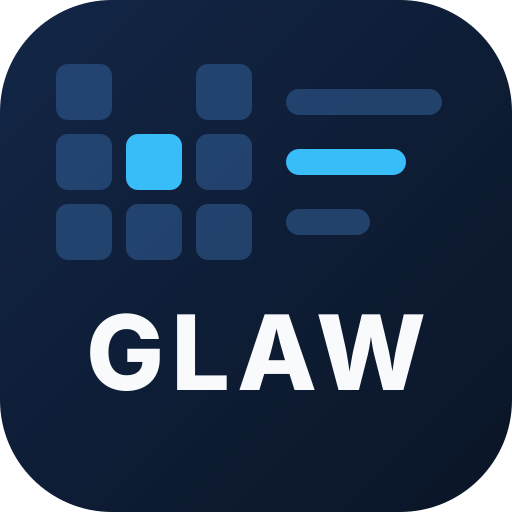
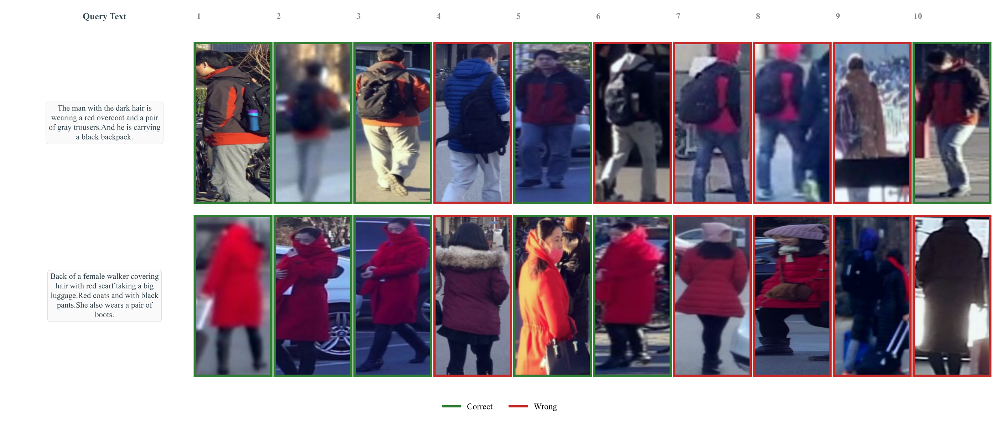
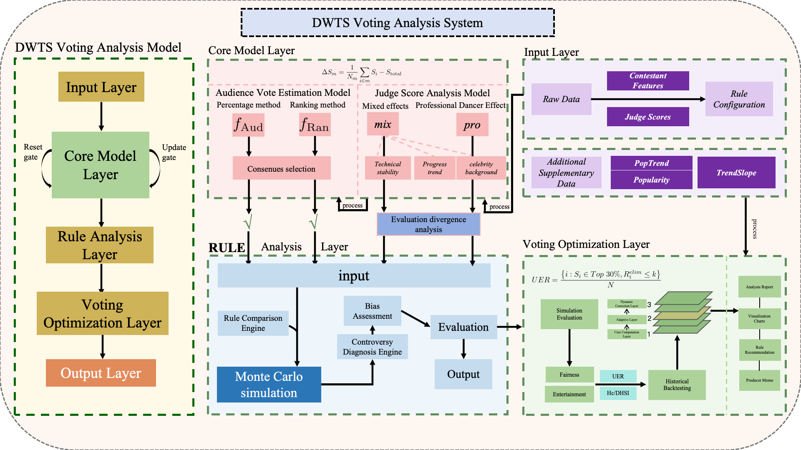
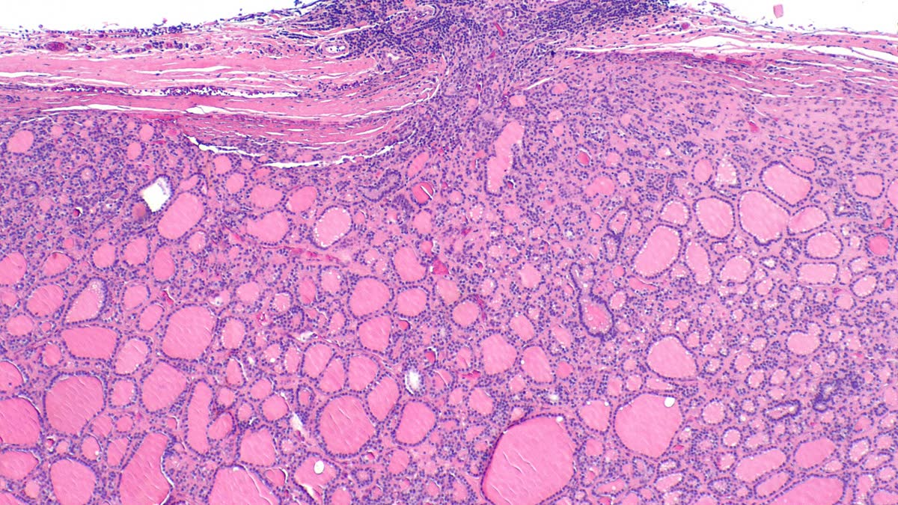

FIRST-AUTHOR MANUSCRIPT · TEXT-BASED PERSON SEARCH

GLAW
Global–Local Agreement-Weighted Dual-Feature Learning for Text-Based Person Search
Text-based person search retrieves a person from a gallery using a sentence, not a photo. A single CLIP embedding averages the whole image and the whole sentence into one vector, so the attributes that separate two look-alike pedestrians are the first thing to disappear. GLAW keeps both views — a global branch over the full pair and a local branch over the 30% of patches and words that cross-modal attention marks as discriminative — and lets each pair's own agreement decide how much each branch is trusted.
74.27
CUHK-PEDES · t2i R@1
65.82
ICFG-PEDES · t2i R@1
65.60
RSTPReid · t2i R@1
CLIP ViT-B/16, 384×128, 60 epochs, one model per dataset. Text-to-image mAP is 66.36 / 39.22 / 50.89 on the same three splits.

The Problem
TBPS is a fine-grained retrieval task: the query names garment type, colour, carried objects and sometimes gait, and the gallery holds tens of thousands of cropped pedestrians. Scoring is a single text-to-image cosine, ranked over the whole gallery.
CLIP compresses a 77-token sentence and a 24×8 patch grid into one 512-d vector per side. What survives that pooling is the dominant semantics — usually the colour and the coarse pose. What is lost is precisely what separates identity A from a near-duplicate B.
Patch and token features still carry the detail, but concatenating them naively adds more noise than signal: most patches are background, most tokens are function words.
The Idea
Keep two branches under one objective. The global branch is CLIP's own CLS / EOS embedding. The local branch pools only the top-k patches and tokens ranked by cross-modal attention, so the local view is conditioned on the pair rather than on the image alone.
Then weight by agreement. When both branches place a pair at the same similarity, the label is unambiguous and that pair is trustworthy supervision; when the two disagree, the pair is down-weighted instead of being trusted. Agreement is a sigmoid over the mean of the two similarities, detached, and it multiplies each branch's TAL loss.
Finally, denoise. A similarity that survives Gaussian perturbation of its inputs is a stable one, so FDR matches noisy and clean similarity with an MSE and leaves the rest of the geometry alone.
System Architecture
One forward pass produces four feature sets and three losses. Token selection is the only place where the image and the sentence are allowed to look at each other before scoring.
24×8 = 192 patches
attention maps returned
α = 0.5 cross-modal
joint, single forward
mAP · mINP
Four Moving Parts
Two change what the model sees, two change what the gradient rewards.
CMATS
selectionCross-modal attention-guided token selection
Both encoders already return their attention: the image side gives CLS→patch importance, the text side gives EOS→token importance. A patch×token similarity from two linear projections is softmaxed over tokens, weighted by the text-token importance and summed, producing a per-patch cross-modal score.
The final importance is the encoder's own attention plus α = 0.5 times the cross-modal term, and the top 30% is kept — 57 of 192 patches, 22 of 75 words.
GLAW loss
objectiveAgreement-weighted dual TAL
Two TAL losses — one on the global pair, one on the token-selected pair — each a temperature-softmax triplet with τ = 0.015 and margin 0.1.
Each pair is then scaled by sigmoid((cosg + cosl)/2), computed with the gradient stopped. Pairs the two views agree on carry more weight; ambiguous pairs are not trusted twice.
FDR
regulariserFeature denoising regularization
Gaussian noise at σ = 0.1 is added to the bypass features and the noisy and clean cosine similarities are matched with an MSE, on both branches, weighted 1.0.
The target is the similarity rather than the vector, so the penalty is on unstable geometry instead of on distance to a fixed point.
Centroid loss
regulariserEMA class centroids
One centroid per identity, updated with momentum 0.99, and only from samples whose agreement exceeds 0.5 (falling back to 0.3 when an identity has nothing cleaner in the batch).
The pull term is 1 − cos weighted by the same agreement score, at weight 0.5. Image and text features of an identity share the centroid, so the two modalities are pulled to the same place.
Results
Text-to-image retrieval on the three standard TBPS benchmarks, CLIP ViT-B/16 at 384×128 for 60 epochs. All numbers are this implementation's own runs; no baseline is re-trained here.
| Dataset | R@1 | R@5 | R@10 | mAP | mINP |
|---|---|---|---|---|---|
| CUHK-PEDES | 74.27 | 89.80 | 94.15 | 66.36 | 50.06 |
| ICFG-PEDES | 65.82 | 81.24 | 86.77 | 39.22 | 7.66 |
| RSTPReid | 65.60 | 83.80 | 90.30 | 50.89 | 28.13 |
ICFG-PEDES is the hardest of the three on ranking quality — mAP 39.22 and mINP 7.66, against 66.36 / 50.06 on CUHK-PEDES. R@1 holds up while the tail of the ranking does not.
Implementation
- Backbone — CLIP ViT-B/16, images resized to 384×128 with stride 16, captions truncated at 77 tokens.
- Optimisation — Adam (β 0.9/0.999, eps 1e-3), weight decay 4e-5, cosine annealing after a 5-epoch linear warmup, 60 epochs.
- Learning rates — 1e-5 base; the two randomly initialised embedding layers run at 1e-3, and any module with
crossin its name gets 5× the base. - Data — CUHK-PEDES (11,003 identities), ICFG-PEDES, RSTPReid; random sampler by default, identity sampler with 4 instances per ID available; optional crop/erase and text augmentation.
- Selection — evaluated every epoch on the test split, keeping the checkpoint with the best t2i R@1.
Technical Stack
Reproducing
git clone https://github.com/bili186/GLAW.git
cd GLAW
pip install -r requirements.txt
mkdir -p logs
python train.py \
--name GLAW_centroid \
--dataset_name RSTPReid \
--loss_names glaw \
--num_epoch 60 \
--batch_size 64 \
--lr 5e-6 \
--tau 0.015 \
--margin 0.1 \
--select_ratio 0.3 \
--cm_alpha 0.5 \
--fdr_weight 1.0 \
--centroid_weight 0.5 \
--root_dir dataDatasets go under data/<name> with the image folder and annotation JSON listed in the repository README.
python test.py --config_file \
logs/RSTPReid/<run>/configs.yamlNotes from the Source
Four things worth knowing before reading the numbers, all of them visible in the code rather than the paper.
Related Projects

Math Modeling Competitions
View Project